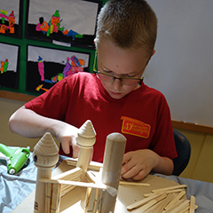
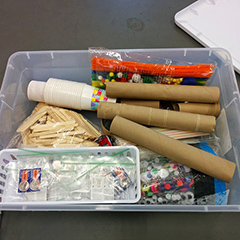

O QUE É A REDE MÃO NA MASSA?
A Rede Mão na Massa (RMM) é uma rede de clubinhos de criatividade que incentiva crianças de 7 a 10 anos a usar papelão, fita adesiva, madeira, tecido, lâmpadas de LED, motores e muito mais, para dar vida a suas invenções e histórias.
Criação Livre e Significativa
A RMM oferece aos jovens a oportunidade cada vez mais rara de construir coisas pelas quais eles se interessam. Nesse processo, as crianças se divertem, sentem orgulho de si mesmas e conquistam habilidades importantes para a vida.
Baixo Custo

Usando materiais acessíveis e de baixo custo, a RMM transforma espaços comuns (escolas, centros comunitários, igrejas, garagens) em espaços extraordinários de criatividade e expressão pessoal.
Comunidade

Os Clubinhos Mão na Massa criam oportunidades para que as crianças compartilhem ideias, colaborem em projetos e trabalhem com adultos de maneira verdadeiramente participativa.